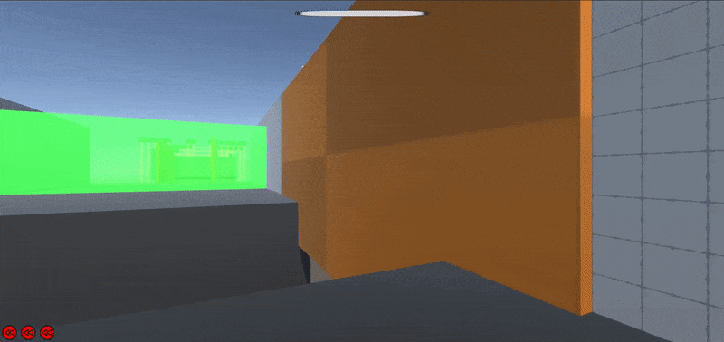

Unity game
Intro
This parkour focused game the main mechanic is a time slow which slows down certain objects including yourself but you still keep your momentum.
So the difficulty here lies in the balancing getting some momentum to be able to jump further and slowing down time to be able to land on a platforn that otherwise would be moving to fast.
The other main element is ofcourse the movement. You are able to wallrun, walljump but be carefull you can't wallrun forever or you will start to slide down the wall and evetually fall off.
You can reset this by jumpimg to a different wall. You also have to be carefull of camera's which will slowly detect you or laser which instantly will detect you. Once you get detected you will rewind to the last checkpoint 3 times.
After 3 rewinds it's do or die.

Here you can see the player slowing down time to be able to jump across the platforms that otherwise would be moving too fast.

Here you can see the player making his way trough some laser fields.
Learning the basis of the wallruning.

Here you can see the player sliding of a wall when he takes too long. To cross the gap he need to jump back and forth.

All of the wallrunning experience coming to the test.
Example Scripts:
SoundManager.Instance.PlaySound("Spotted");//GroundCheck
isGrounded = Physics.CheckSphere(_groundCheck.position, _groundDistance, _groundMask);
if (_isGrounded && _velocity.y < 0)
{
_velocity = new Vector3(0, 0, 0);
_velocity.y = -2f;//not 0 to make sure the player is forced down
_canWallJump = true;
_isWallRunning = false;
}
//WallCheck
_nearWall = Physics.CheckSphere(_groundCheck.position, _wallDistance, _wallRunMask); //just to check if there is something
RaycastHit hit = IsRightOrLeftHit(); //actual raycast to get hit obj
if (hit.collider != _prevWall.collider && hit.collider != null && _nearWall == true)
{
_canWallJump = true;
}//to make it able to jump wall to wall but not wall to same wall
if (_isGrounded)
{
_nearWall = false;
_wallRunCurrentTime = _wallRunMaxTime;
}
if (!_nearWall)
_isWallRunning = false;
} if (_isWallRunning)
{
if (_onRightSide)
_camera.transform.localRotation = Quaternion.Lerp(_camera.transform.localRotation, Quaternion.Euler(0, _camera.transform.localRotation.y, _wallRunCameraTiltAngle), 0.10f) ;
else
_camera.transform.localRotation = Quaternion.Lerp(_camera.transform.localRotation, Quaternion.Euler(0, _camera.transform.localRotation.y, -_wallRunCameraTiltAngle), 0.10f);
_controller.Move(move * _moveSpeed/2.0f * Time.unscaledDeltaTime);
} // tilt camera when wallrunning and small speed boost.jpg)
.jpg)
.jpg)
.jpg)
.jpg)